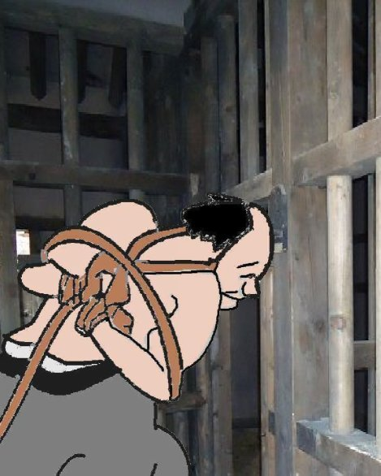
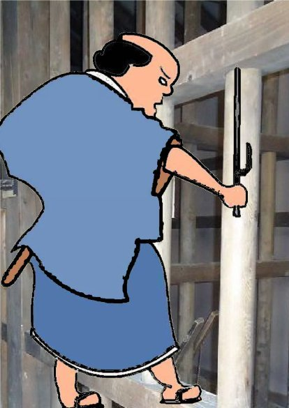
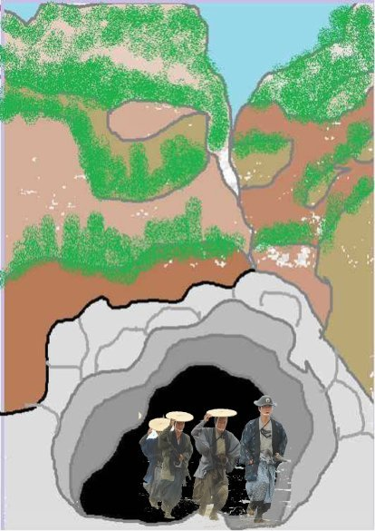
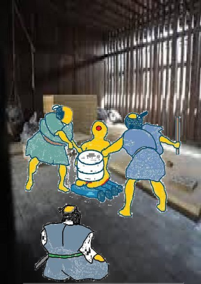
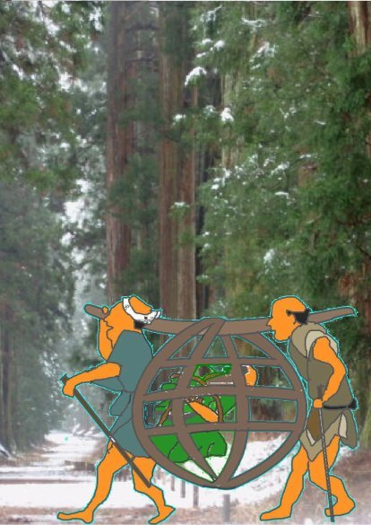
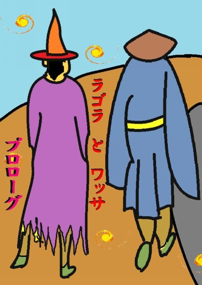

| ⑬男は我慢 | |
| 深川龍 | |
| (2016) | |
第十三話
唐丸カゴは浪速から江戸へ走った。着いた先は世にも恐ろしい拷問部屋じゃった。
「なぜに私がこのようなところに送られたのでござりまするか。」
男は壁にかかっている数々の拷問道具を見て震え上がった。
「貴殿は初太郎殿の腹心のご家来じゃった。佐渡の金山から掘り出した金をどこに隠したか。それを申さばすぐにも自由の身になれる。」

男は頭を振った。
「我が主人の初太郎は清廉潔白な人柄でござりました故、そのような隠し金などござりませぬ。」
役人は壁に立て掛けられておった青竹を取った。青竹は手元まで四つに裂いて、握るところだけ荒縄が巻いてあった。
「初太郎殿は岡崎の頃より家康公のご家来でござったが、突然、秀吉公の家来に鞍替えをされた。恩を忘れて敵方に走るような者を清廉潔白な人柄とは言えまい。」 男は役人が青竹を持ったのを見て肩をすぼめて震えた。役人は笑いながら青竹を素振りした。空気を切り

裂 く ひゅー っ という音が聞こえた。
「我が主人の初太郎は事情があって秀吉公の家来になったのでござる。家康公のご恩も決して忘れてはおりませなんだ。隠し財宝などをつくるような人柄 ではござりませぬ。」
男は海老のような格好になって役人に頭を下げた。
「そなたは聞きしに勝る話し上手じゃ。じゃが、わしも江戸の与力じゃ。そうは簡単にだまされぬ。」
「とんでもござりませぬ。真実を言っておるのでござりまする。どうぞ、私めの申すこと、お聞き入れ下され。」
男は更にひれ伏して額を土間にくっつけ 、 おろお ろ した。
「武士たるもの良くもまあ、それほどまで卑屈になれるもんじゃ。それも芝居のうちか。」
「とんでもござりませぬ。私は初太郎様に拾っていただく前は北伊勢の千種の在に住まいなす刀鍛冶でおじゃった。」
「初太郎殿は秀吉殿の下で佐渡金山の奉行になったではござらぬか。そして、そなたは金山の鍛冶師の頭領となった。」
「それは間違いござりませぬ。初太郎様は私を侍に取り立ててくださった。」
「そなたは初太郎どのが亡き後、その莫大な金をどこかに隠した。これは上様が申されたこと故、間違いない。」
男は激しく頭を振った。
「与力殿、主人の初太郎は佐渡で取れる金はすべて大阪城に運びましてござりまする。太閤秀吉殿がその金を朝鮮出兵の軍用資金にされたことは家康殿も も良う知っていることでござります。」
与力は男の首の喉仏の辺りを青竹で押し上げた。
「問題は関ヶ原の戦いの後から、大坂城の陥落までの間じゃ。佐渡で取れた金の流れがつかめぬ。」
男は苦しそうな顔をして、目を白黒させた。
「それも京都の織部殿が良くご承知だった筈ではござりませぬか。」
「織部も恩ある家康殿を裏切って、大阪夏の陣の直後に切腹させられたではないか。今は亡き織部が知っていたかどうかは知るよしもない。」
「関ヶ原の戦いの後から大坂城の陥落までの間は金を掘るどころではなかったのでござります。」
「まだ、ごまかそうとするか。」
与力は立ち上がって男の上着を刀で裂いて剥ぐと、裸になった背中を青竹で何度も叩いた。男は青竹 が ひゅーばちばち っ と言う度に 、 う っ、 う っ と悲鳴を上げて悶えた。男は頭か ら がく っ と前に倒れ込むと、唇から血を流した。
「申し上げまする。そのような乱暴なことは止めて下され。」
与力は男を引き起こした。男は血と砂 を ぺっぺ っ と吐いた。
「申し上げまする。仕方がござりませぬ。」
与力は男の髷を掴んで揺すった。
「もし、出鱈目だったら、耳と鼻を削ぎ、目玉をくりぬいてやるぞ。」
男の目から涙が流れ落ちた。
「知らぬものは知らぬ、否、そんな事実はないのでござる。なのに、ご無理なことを。」
与力は再び青竹を持って、男の背中をめった打ちにした。男は打たれる度 に ひいひ い と哀れな声を出した。
「申し上げまする。申し上げまする。」
男の背中が割れて、真っ赤な血が流れ出している。
与力は粗塩と赤い唐辛子の粉を持ち出した。
「傷口が膿むと気の毒じゃ。これを傷口に塗って差し上げよう。」
男は身震いした。
「申し上げまするによって、お許しを。」
「けっ、口ほどにもない奴よ。目玉をくりぬかれる時はこんなもんじゃないぞ。
まさか、嘘じゃないだろうな。」
男の口には涙と鼻水が混ざって流れ込んでおる。その為に言葉が聞き取りにくい。
「能登半島でござる。その先端に狼煙と言うところがござる。岩が突き出て、大潮の干潮には洞窟が現れまする。その中に。」
「なに、大潮の干潮とな。もっと、はっきりと申せ。」
与力は良く聞き取れない所を聞き返した。
男は口の中に溜まった液体 を ごく り と飲み込んで、今度ははっきりと言い添えた。
「半月先の新月のころが大潮でござる。」
「早速、殿に許しを得て、そこへ行って見よう。」
男はにっこりと笑った。
「ああ、それでは、これで私めはお許しいただけるのでござりまするな。痛かった、痛かった。もっと早く言えば良かった。」
「ああ、いやいや、それは財宝を見つけてからじゃ。」
「与力様、お行きになられますならば半島の東側をお通りなされよ。
なかなか、よい温泉がござる。きれいな湯女もおりまするぞ。」
与力は眉 を でれ っ と下げた。
「馬鹿を申すな。わしが帰るまで、そなたは牢屋じゃ。」
半月が過ぎて、与力は四人の同心を連れて能登に向かった。一、二週間ほどすると、恐ろしい形相をして戻ってきた。
「貴様、ぬけぬけとだましおって。やい、どうしてくれるか分かっていような。」
男は背中の傷もちょうど癒えたばかりじゃった。
「温泉はいかがでござりました。良きお湯と良き女子でござりましたでしょう。」
与力は男に馬鹿にされていると思って、ゆで蛸のよう

に真っ赤になって怒った。
「よっし、思い知らせてやるぞ。逆さ吊りの釜ゆでがよいか、青竹の上に座って石臼を抱くが良いか。」
「それでは不首尾でござりましたか。わたしは確か、黄金は狼煙の先の洞窟と聞いたように思いましたが。」
「黙れ、黙れ。苦労に苦労を重ね詳細に調べたが黄金など一欠片もなかったわい。この食わせ者めが。」
「だから、初手から黄金の財宝など隠されてはおらぬと申しているではござりませぬか。嘘など申しているのではござりませぬ。」
与力は隣の間に控える同心を呼んだ。
「こ奴の膝を砕いてやる。青竹を並べて、その上に座らせよ。」
男は青竹の上に座るのを拒んだ。
「それだけは勘弁して下され。親からいただいた脚がつぶれては歩けなくなりまする。」
与力は持っていた扇子で男の頬 を ぱし っ と叩いた。
「焼き鏝、釜ゆで、何でもあるぞ。もっと辛い方が良いか。」
男は並べられた青竹の上に正座させられて、嗚咽しながら震えておった。
「わたしが悪うござりました。今度こそ、本当のことを言いまする。許して下され。」
石臼を男の傍まで運んで来た男が笑った。
「この男は本当に侍でござりまするか。女、子供のようにたわいない。」
男は同心にも頭を下げた。
「もう、侍は捨てておりまする。町人でござる。
石は二つまでにしてくだされ。我慢出来ませぬ。二つでも関節は潰れてしまいます。」
同心は面白うなって、六つも石臼を運んだ。人は時として残酷になれるものじゃ。
男のごっちゃ混ぜになった鼻汁と涙が青竹の上に流れ落ちた。
「主人の初太郎もこの私も正直一辺倒の人間、何でこのような目に遭わねばならんのじゃ。」
同心は男の膝に一つ石臼を乗せた。男は歯を食いしばった。二つ目を乗せた。くっと言って腹に力を入れた。その途端、男が屁をひった。与力と同心が笑った。
「二つぐらいは何でもない。これからじゃ。」
男は大きな口を開けて叫んだ。
「申し上げまする。本当のことを。今度は間違いござりませぬ。
関ヶ原でござります。」
同心は三つ目の石を乗せた 。 みしみ し と青竹の割れる
音がした。
男がうめいた。
「戦場になった関ヶ原の周辺は荒れ果て、人々は土地を捨てました。そこに目をつけて、土中深く埋めたのでござる。
上には十人かかっても動かぬ程の石灰岩が乗せてありまする。」
四つ目の石臼を乗せた。太ももとふくら脛がのし餅のようになり血が噴き出した。
「本当か。もし、これが嘘なら、今度は目玉をくりぬいてやるぞ。」

与力は楽しんで男を痛めつけているように見えた。五つ目の石臼を乗せた。太腿が破れて鮮血と共に筋肉がはみ出した。
男は苦痛のために何も考えることができぬように頭を振った。
「嘘ではありませぬ。誰が嘘など言うものか。」
六つ目の石臼が乗せられた。脛と太腿の骨が折れ る みしみ し 云う音がした。
「間違いないか。」
与力が念を押したが、男はもう何も耳に入らないらしくてただ泣くのみじゃった。
与力は十人の若い同心を連れて関ヶ原に向かった。江戸から関ヶ原までの往復なら一週間もかからんじゃろう。男はもっと時間がかかる場所を言えば良かったと後悔しておった。
果たして、一週間後、与力は更にすざましい形相をして戻ってきた。
「目玉をくりぬいてやる。」
男の潰された両足はまだ、少し動かすだけでも皮膚から黒い血が流れ出た。「このようにされてしまっては生きて居っても詮無きことじゃ。殺して下され。」
与力は小刀を抜いて見せたがすぐ鞘におさめた。
「しぶとい奴め。金塊が見つかるまで、殺しはせぬ。」
男は目を閉じた。
「わたしは何も嘘を申しておりませぬ。主人の初太郎もわたしも正直者でござります。天下の黄金を隠して猫糞しようなどという料簡は決して持ちませぬ。」
与力は控えの間にいる同心を呼んだ。
「くりぬいた目玉を入れる手桶を持ってまいれ。手ぬぐいもな。」
男は目を開くと凄まじい表情をして同心をにらみつけた。
「これ程申しあげても、この真実が信じられぬと申されるか。ならば、嘘をつくより仕方がござるまい。
わたしは侍を捨て、浪速で妻子と商いをして、その日の糊口をしのぐ身でござる。
金塊の有りかなど知っておればこんな暮らしをしておらぬ。」
与力は思わずあいづちを打った。
「じゃが、目玉はくりぬいてやる。そなたが嘘をついた罰じゃ。」
「無理に嘘をつかせたのはそちらの責任じゃ。何もわたしに科はない。」
与力は男の左目をくり抜いた。
男は顔を朱色に染めながら、残ったもう一方の目で与力をにらんだ。
奉行は老中のもとに参上した。
「与力にきつく取り調べをさせましたが、やはり、奴めは白におじゃざりました。」
老中は口をへの字に曲げて宙を睨んだ。
「あの膨大な金塊はどこかにある筈じゃが、そうまでしても云わぬなら奴めは 本当に知らぬのであろう。」
「奴めを今後、如何いたしましょう。」
「仕方がない、逃がしてやれ。上様には残念ながら奴めは何も知らなんだと申し上げよう。」
男は駕籠に乗せられて、再び、浪速の妻子のもとへ送られることになった。
大井川を渡った時じゃった。男は堪えていたかのように笑い出した。
「ふふっ、俺もタヌキおやじを相手に、ここまで芝居がうてるとは思わなんだな。ふふっふ、今に見ろ、あの金塊はきっと役に立つ。ははぁはぁ、はっはっはっ・・。」
それを聞いていた駕籠舁は男が奉行所で折檻を受けて気が狂ってしもうたのじゃろうと思うた。
それでも駕籠 は えいほ っ、 えいほ っ と浪速に向かったそうじゃ。

豊臣秀吉に大恩がある男は豊臣方と大阪城の復興を望んでいたのじゃった。男は膨大な隠し金塊で浪速を商業都市にして経済力で幕府を倒そうと目論んだのじゃった。
男にこの思いがなかったならば熾烈を極めた拷問に絶えられなかったに違いない。男の目論見通り浪速はやがて大阪となり天下の台所となる。
そういえばキリシタンが拷問に耐えて信仰を捨てなかったのもキリストさまに対する思いがあったからじゃ。人は心と気力で生きるものぞ。
(完）
深川龍の
ラゴラとワッサ
① プロローグ
② 第一幕
もお読みください。
